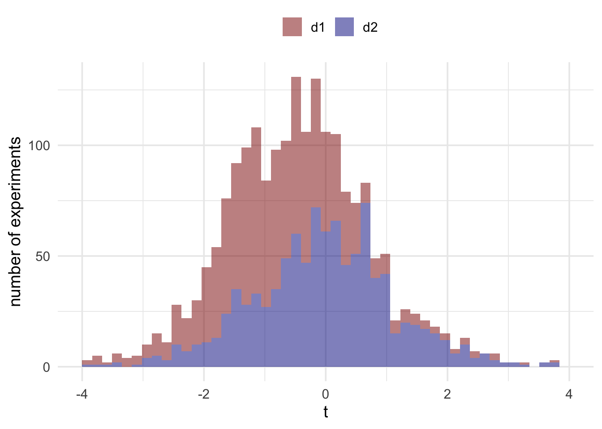

Chapter 2 Criticisms of p values

People have written lots of criticisms of p-values. A lot of these are of the form “p-values are bad because they don’t do X”, where X is not a design feature of frequentist inference. I’m not interested in these kinds of criticisms, because they seem pretty meaningless. Instead, I think that if we are going to criticise p-values it is better to look at the design features of frequentist inference and find fault there.
So what are the design features? In the last section, we saw how frequentist inference was very good at controlling the kinds of mistakes we made in our treasure hunt. To do this, all we needed was a model of how our treasure detecting device operated. If we only wanted to control false positives all we needed was a model of how it operated in the absence of treasure—we didn’t even need to know how it behaved when there was treasure around! To build this model we needed one bit of information—that the dial on average pointed at 0 when there was no treasure. The whole model could then be built up by running lots of simulations (or pretend experiments) where this parameter (the average reading in the absence of treasure) was the only parameter we needed to set. Just doing this allows us to precisely set an upper-bound on how often we make false positives. That’s a pretty powerful property, and it all comes from such a simple principle.
But are there some issues with this simple principle? We can try explore it a bit more and see where things start to break.
2.1 Same measurements from different devices
Let’s imagine a new scenario. As before, you have a treasure hunting device (we’ll call it \(d_1\)). You’re using \(d_1\) to hunt for treasure, and using the readings to decide whether to dig or not. At your first treasure hunting spot, you record the measurements: 1, 0, 1, 3, 0, 1, 4, -1, 3, 4. You then average, and scale these measurements and get a t value of approximately 2.848. You compare this to what you found in your imaginary experiments and find p = .019. According to your rule, that means you dig. For far so good.
However, before you start digging, I run up to you and tell you that device \(d_1\) is broken. I tested it before you left, and found that \(d_1\) is incapable of measuring values bigger than 6. You look at your measurements again, and to your relief, they don’t go anywhere near 6. Your highest measurement is only 4. But should you worry that the device couldn’t register values of 6 or higher? And if so, why?
More generally, how would this fault with the device influence your treasure hunting strategy and would it change your view of when you think you should start digging? The intuition here might be a little unclear, so let’s modify the example a little bit.
In the modified example, you want to be extra careful to avoid taking a broken device with you, so you take two measurement devices (\(d_1\) and \(d_2\)). The devices are identical and, indeed, when you look at the measurements you can see that they’ve recorded an identical set of 10 numbers. Because the measurements are the same, you just pick whichever device and work out your scaled reading and decide whether to dig.
But not so fast, I again tell you that \(d_1\) is actually broken and it is incapable of recording measurements higher than 6. I also tell you \(d_2\) is working perfectly. What does this do to your inference? Does your inference change depending on whether you decided to look at \(d_1\) or \(d_2\)? Remember, that the actual numbers produced by both machines are identical.
If you want to be a good frequentist then the answer to this question is a resounding yes. Even though \(d_1\) and \(d_2\) produced the exact same measurements, and despite these measurements being accurate, your inference will depend on the device you decided to look at. But why? Understanding the answer to this means going back to the sampling distribution we generated by running pretend experiments. Let’s run some new pretend experiments for \(d_1\) and \(d_2\). The stimulations for \(d_1\) will be modified slightly so that all values higher than 6 will be replaced with a 6.

As you can see, the distributions are different. This is because in those pretend experiments, the devices would behave differently. In our actual experiment (this treasure hunt), they didn’t behave differently. They behaved exactly the same, and both behaved accurately. Remember, these distributions are what we use to make a judgement about whether our reading is surprising or not. We mark out sections of these distributions to find the range of values that are surprising and the range of values that are unsurprising. Because the shape of these distributions are different, the ranges that we mark out on each of them will be different. And consequently what counts as a surprising/unsurprising value on one distribution might not count as a surprising/unsurprising value on the other one.
If you’re being a frequentist then there’s no getting away from the fact that because the devices have the potential to behave differently in situations other than the current situation, this potential difference must be accounted for. They factor into the calculation of the p value by changing the distributions and, therefore, we need to take account of these potential events in our inferences if we want to maintain our error control properties.
For some, the influence of imaginary events is madness. Jeffreys described this “madness” as follows:
What the use of P implies, therefore, is that a hypothesis that may be true may be rejected because it has not predicted observable results that have not occurred. This seems a remarkable procedure (Jeffreys, 1961, p. 385)
2.2 The universe of possible events
To see another example of how potential events can influence inferences, let us examine a different scenario. In this scenario, we’re going to make judgements about the fairness of a coin (fair coins being defined as coins that show heads with P(heads) = 0.5). We’ll use the same procedure as our treasure hunting device. We will flip a coin that we know is fair a set number of times (let’s say 10 times). We then count up x heads out of our total of n flips. We then repeat the procedure many many times. We can use this procedure to generate a distribution of possible data. Again, we can just simulate this.

Armed with this distribution, we can start making judgements about actual data. To produce some real data, I’ll flip the coin I want to test and, at the end, I’ll count up the number of heads. Let’s say that I got 8 heads and 2 tails. Now you can make a judgement about whether this data is surprising or not. To do this, all you need to do is compare it to the simulated results above.
The p value for 8 heads in 10 flips is 0.109.
This result is not surprising on the assumption that the coin is fair (i.e., P(heads) = 0.5)
But save your judgement for now, because there’s something that I have neglected to tell you. My plan wasn’t to flip the coin 10 times. Instead, I decided that I would just flip the coin until it came up tails twice, and it just so happened that on this occasion this meant that I flipped the coin 10 times.
Does this fact change your inference? If our inferences are based on comparing our actual data to possible data then we need to examine whether this sampling rule changes the possible data that could have been generated. That is, we need to take into account whether the data was generated by deciding to flip the coin 10 times or whether it just so happened that I flipped the coin 10 times, but really “in my head” I was going to stop when I got 2 tails. To so see why we need to re-run the simulations. In the new simulations for each sample we’ll continue to flip the coin until it comes up with 2 heads, and then we’ll stop. Sometimes this will mean that the coin is flipped 10 times, but sometimes we might flip it more, and sometimes we might flip it less.
We now can count up the relative frequency of getting 2 heads after 2 flips, after 3 flips, 4 flips, and so on. And we can draw a plot of this distribution.

From this new distribution, we can now ask: How often would you need to flip a fair coin 10 or more times before you got two heads? That is, is it surprising that we had to flip it this many times? Let’s see how the inference differs.
For a fair coin (P(heads) = 0.5), about 98% of experiments would end before we got to 10 flips. Only 2% of experiments would run this long. Therefore, our result is surprising!
2.3 Summary
What these two examples (the broken device, and stopping rule example) show is that even when presented with the same data the inferences we make about that data will be different if the realm of possible, but not actual results are different. That is, non-existent results influence our inferences. A broken device that still behaved accurately when we used it influences our inferences, and what we had going on inside our head when we collected our data also made a difference. Based on this, we can go ahead to imagine even more ridiculous examples.
For example, imagine that I build a device that is going to flip a coin to decide whether 1) to flip the coin n times or 2) flip it until it comes up tails x times. The device makes a decision, flips the coin, and it just so happens that on this occasion we get 8 heads and 2 tails. How do I analyse this set of data? Does the realm of possible data include the machine that makes the decision? What if I know what decision the device made? Do I still have to take into account the experiment that wasn’t performed? And what if I have the results of two experiments, one that was performed as part of a mixture (using a machine to decide which of the two experiments would be performed) and one that was not performed as part of a mixture. If they yield the same data, then does the fact that one was part of a mixture mean that the conclusions should be different? For a frequentist, these can be pretty uncomfortable questions! In the next section we’re going to see if we can find a way out of this bind.